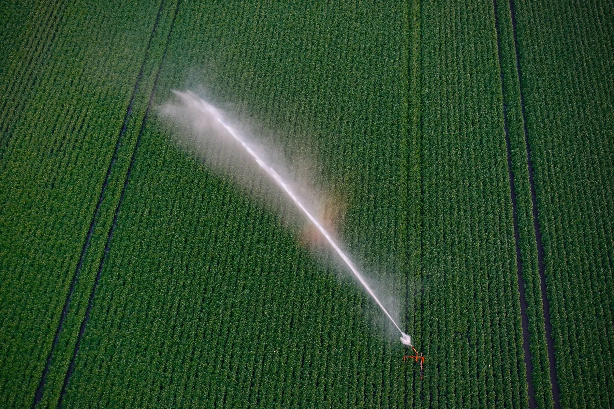

Check the water conditions that may affect mixing, compatibility and foliar application.

Water testing and interpretation
Water testing for irrigation, fertigation and sprays.
A water report needs to be interpreted for its intended use. The team considers the source, crop and delivery system, whether the water is used for sprays, irrigation or fertigation.
How the water is used
Tell us how the water will be used.
Water quality needs to be assessed for the intended use. A report on bore, dam, tank, mains or blended water may raise different questions for spraying, fertigation or irrigation.
Read salinity, Sodium and other constraints against the crop, soil, root zone and delivery system.
Record the water source, any blending or filtration, changes through the season and how the water reaches the crop.
Foliar water quality
Water is the first ingredient in the spray tank.
Source water can affect the products added to a tank. Testing helps establish the starting conditions when investigating mixing, compatibility or application problems.
01Do not stop at pH
pH is a snapshot.
It shows how acidic or alkaline the sample is when tested. It does not describe how strongly the water will resist change.
02Hardness and alkalinity
Hardness and alkalinity are different.
Calcium and Magnesium contribute to hardness. Bicarbonate and carbonate contribute to buffering and can influence tank behaviour.
03Verify treatment
Test the water after treatment.
Filtration, softening, acidification and reverse osmosis do not produce the same water. Test the final water at the point of use.
04Seasonal variation
The source can change.
Bore, dam, river and blended supplies may vary through the season. One old result may not describe the water being used now.
The report
Consider the results together.
No single figure describes water quality. The team considers the relationship between measurements and how the water will be used.
pH and alkalinity
Separate the immediate pH reading from the buffering capacity that can influence how the water responds in a tank or system.
EC and dissolved salts
Read the overall salt load in relation to the crop, soil conditions, source and irrigation strategy.
Hardness and bicarbonate
Understand mineral load and buffering where mixing, deposits, compatibility or system performance are part of the question.
Sodium, chloride and SAR
Interpret the Sodium relationship and specific salts for the soil, root zone and intended water use.
Specific elements and metals
Review Boron, Iron, Manganese and other measured elements where the source or intended use makes them relevant.
Turbidity and biology
Consider suspended material or microbiology when the source, filtration, crop or delivery pathway makes those questions useful.
Understanding the units
Check the reporting units.
A value is only comparable when the unit and reporting basis stay attached. Check which of these common Australian units and reporting bases appear on your report.
Total hardnessmg/L as CaCO3
Shows the combined hardness contribution, commonly from dissolved Calcium and Magnesium.
Alkalinitymg/L as CaCO3
Describes acid-neutralising or buffering capacity. Bicarbonate may also be reported separately in mg/L.
Electrical conductivitydS/m or µS/cm
Shows overall ionic conductivity. One dS/m equals 1,000 µS/cm.
Individual ionsmg/L
Sodium, chloride, Boron, Iron, Manganese and other measured constituents need their own result.
Sodium adsorption ratioUnitless ratio
Relates Sodium to Calcium and Magnesium for irrigation and soil-structure interpretation.
In dilute water, a value reported in ppm is approximately the same numerical value in mg/L. The report should still identify the constituent and, for hardness or alkalinity, the basis used.

Interpretation before action
Interpret water results for the crop and system.
The same result may mean different things for different crops and systems. A single threshold should not be treated as a recommendation for every situation.
- For sprays
- Check compatibility for the intended products, tank mix, water source and application.
- For fertigation
- Consider the water quality alongside fertiliser, equipment, soil and root-zone conditions.
- For irrigation
- Crop sensitivity, soil behaviour, climate, volume and seasonal pattern all matter.
The Hybrid-Ag approach
Position. Pattern. Plan.
Water results are reviewed alongside the intended use and any relevant soil, plant or production data.
01Position
What does the current sample show?
Establish the source, intended use, crop, system and current laboratory measures.
02Pattern
What may have changed?
Review seasonal changes, water blends, earlier reports and the delivery system alongside observations from the paddock or block.
03Plan
What needs attention next?
Discuss any further testing needed and what to check as the water is used.
Before sampling
Prepare before collecting a water sample.
01
Identify the source
Bore, dam, river, tank, mains supply or blend, including anything that changes before use.
02
Name the intended use
Sprays, irrigation, fertigation or a combination, plus the crop and production system.
03
Explain the question
Share what has changed, what has been observed and the decision the result needs to support.
04
Keep previous results
Earlier reports can help show whether the current sample is typical or part of a changing pattern.
Start with the intended use